LCR Code · how the format works
An LCR Code carries two independent messages in one picture. One is written in light and dark, the other in green and magenta. Here is what that means, why it is worth doing, and what makes it fail.
A barcode is a grid of coloured squares. Each square is a module, and each module is one small piece of the message.
There are no bullseyes. Most matrix codes spend three corners on finder patterns whose 1:1:3:1:1 stripe ratio is easy to spot in a camera image; this one spends nothing, and gets located by the ring around the outside instead.
The ring does four jobs at once. Its four corner cells are always dark, which hands the scanner the four points it needs to undo perspective. The light and dark pattern running around it is a sequence in which every run of eight positions occurs exactly once, so any clear stretch of ring says which way up the symbol is, whether it is mirrored, and which size it is. Every third position is a known colour — that is the calibration target, telling the scanner what the lighting is doing before it trusts any colour it reads. And the positions in between carry data, both the symbol's own settings and payload.
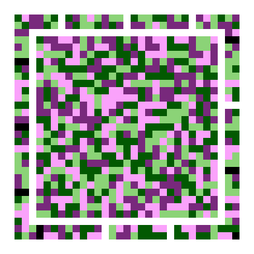
Dropping the finders is worth more than it sounds. They and their supporting patterns cost a fixed 204 modules at every size — 46% of the smallest symbol — and that area is now payload. The same 96 bytes above used to need a 33×33 grid; it fits in 25×25.
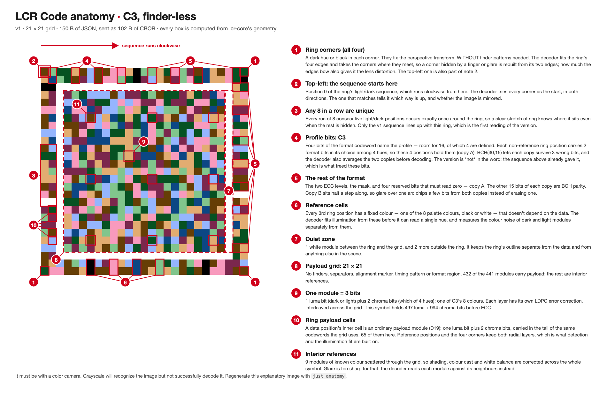
Here is the whole idea. Look at any module and ask two separate questions about it.
Is it light or dark? That is the luma layer — luma is just the technical word for brightness. It is one bit per module: dark means 0, light means 1.
Is it green or magenta? That is the chroma layer — chroma being the technical word for colour-ness, the part of a colour left over once you ignore how bright it is. Also one bit per module.
The two questions have nothing to do with each other, so each module carries two bits instead of one. That is the whole density gain, and everything else in the design exists to keep those two questions genuinely independent.
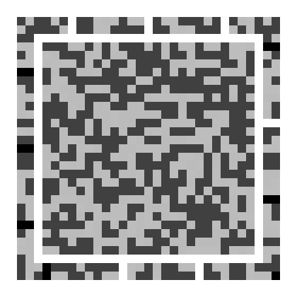
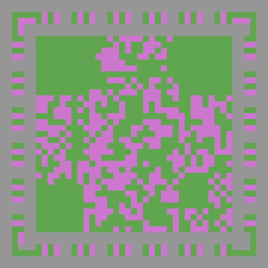
Compare the two. They are not the same pattern — that is the point. If they were, the second layer would be telling you something you already knew, and the symbol would be carrying one message drawn twice.
Because the luma layer is a complete message by itself, a scanner that cannot see colour at all still reads something. Point a black-and-white sensor at the symbol, or read it in terrible light where the colours wash out, and you get the first chunk of the data rather than nothing.
This is why the ring is found by its brightness pattern alone. The scanner has to locate the symbol before it can possibly know what the lighting is doing to the colours, so that first step reads only light and dark. Colour is what the ring then carries — the settings and some payload — and none of it is needed to find the symbol in the first place.
There is a real cost to that split, and it is worth stating plainly: because the symbol's settings ride on the ring's colours, a purely black-and-white camera can find one of these symbols but cannot read it. Where that matters — print, or anything that might be photocopied — the format keeps the older layout with finders, and the monochrome profile below keeps them always.
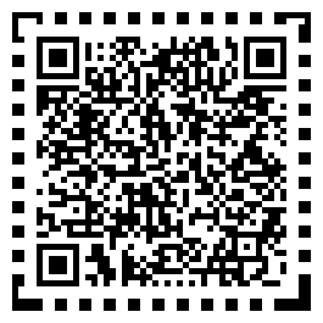
Two brightness levels times two hues gives four colours. They look arbitrary. They are not — each one is the answer to a constraint.
Read the swatches as a 2×2 table. Down each column, the hue is identical — 136° for both greens, 326° for both magentas. Across each row, the brightness is identical. That grid structure is the thing that keeps the two questions independent.
Suppose the dark hue were a blue and the light hue a yellow. Then to answer "is this green or magenta?" you would first have to answer "is this light or dark?", because the answer would mean different things at each level. The two layers would be tangled, and a mistake about brightness would become a mistake about colour too. Keeping one hue angle per column means the colour question can be answered without knowing the brightness at all.
The magenta was originally specified at hue 316°. At that angle, the light magenta the design asked for does not exist in the range of colours a screen can show — it is outside the gamut, so it was silently flattened to a duller colour than intended. Three of the four swatches were vivid and one was washed out.
That asymmetry quietly biases every colour decision the scanner makes, because it compares each sample against a midpoint between the two hues, and the midpoint had been dragged off-centre. Moving the hue to 326° fixed it with no other change: same brightness levels, same vividness target, all four colours now equally saturated.
Camera sensors do not see colour evenly. A typical sensor puts a grid of tiny filters over its pixels — half of them green, a quarter red, a quarter blue. Green gets twice the sampling of anything else, so green-versus-not-green is the colour distinction a camera measures most accurately. Magenta is exactly "not green": red and blue together, with the green removed. Putting the hue axis on green against magenta spends the colour budget where the sensor is sharpest.
Decibels come up constantly here, and the idea underneath is simple: how far apart are the two things you are trying to distinguish, compared with how much the measurement wobbles?
Imagine measuring the brightness of a module. You expect either "dark" or "light", but noise means you never get exactly either — you get something nearby. Two quantities decide whether you can tell which was intended:
Separation is the gap between what "dark" and "light" actually look like. Noise is how much any single measurement scatters around where it should be. If the gap is large and the scatter is small, every reading is obvious. If the scatter approaches the gap, readings start landing on the wrong side.
The signal-to-noise ratio is that comparison, and decibels are a compressed way of writing it so that very good and very bad both fit on one scale:
The rule of thumb worth remembering: every 6 dB is a doubling. 6 dB better means the gap is twice as clear relative to the noise. A 20 dB difference is about ten times. And because it is a ratio, "how many dB" is a fair way to compare two completely different measurements — such as a brightness layer and a colour layer.
Which brings us to the reason this page exists. Measuring both layers on the same scale, on a clean capture:
| Layer | Separation | SNR, clean | SNR, under stress |
|---|---|---|---|
| Luma (brightness) | 45.8 L* | 29.7 dB | 21.9 dB |
| Chroma (colour) | 110.1 a*b* | 37.3 dB | 21.8 dB |
The colour layer is 7.6 dB cleaner than the brightness layer on a good capture — not worse, better. That is not a surprise once you see the separation column: the four colours are placed so that the two hues sit 110 units apart, while the two brightness levels are only 45.8 apart. More than twice the gap, which is almost exactly 7.6 dB worth.
This contradicted the format's own written assumption, which said colour was the noisier channel and gave it extra error correction on that basis. Under stress the two converge to a dead heat, but colour never becomes the worse channel by this measure.
The interesting failures are not "the picture got a bit worse". Each kind of damage attacks a different part of the design, and the symbol shrugs off some of them almost completely.
A shadow across half the symbol, or a bright reflection on the glass, sounds fatal — but both are smooth. They change slowly across the picture, so the scanner can measure them at the known-colour reference points and subtract the whole gradient before reading anything.
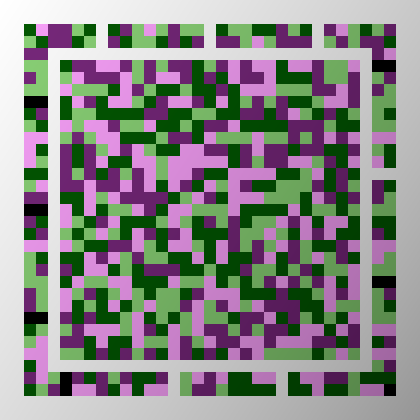
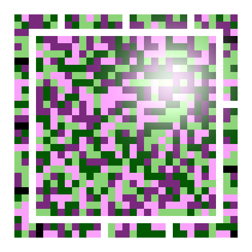
Defocus is different, because it is not a gradient — it is neighbouring modules bleeding into each other. And it lands hardest on the colour layer, because colour is already spread out: cameras record colour at lower detail than brightness, and the scanner deliberately reads each colour over a wider area to gather more light. Both of those choices make colour more fragile when the image smears.
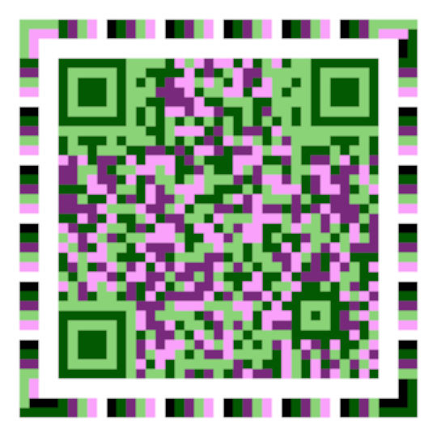
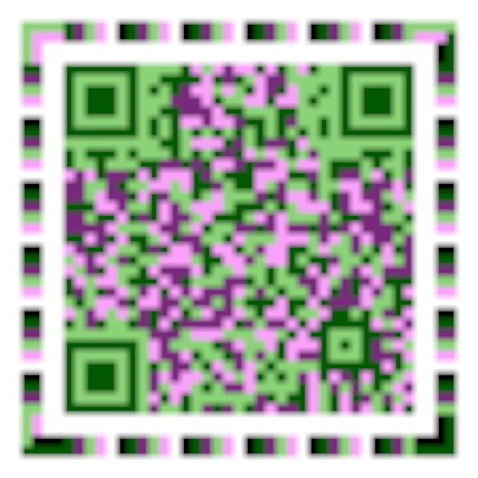
Random speckle is what error correction is built for. It degrades smoothly rather than falling off a cliff, because the errors are scattered independently and the code was designed against exactly this.
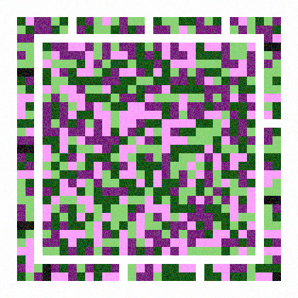
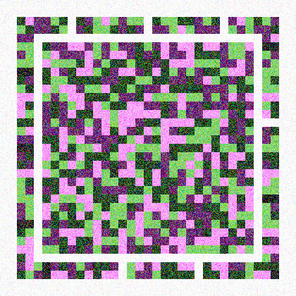
Photographing a screen at an angle squashes the square into a trapezium. This is the easiest problem on the page, because the ring's four dark corners give four known points, and four points are exactly what you need to compute and undo the distortion. Tilting is in fact encouraged — a slight angle moves the camera's own reflection off the symbol.
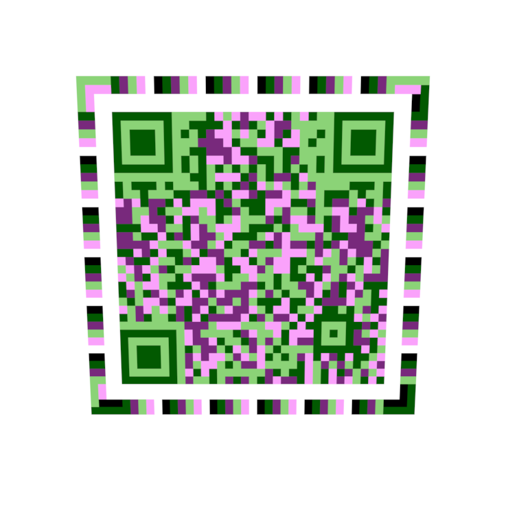
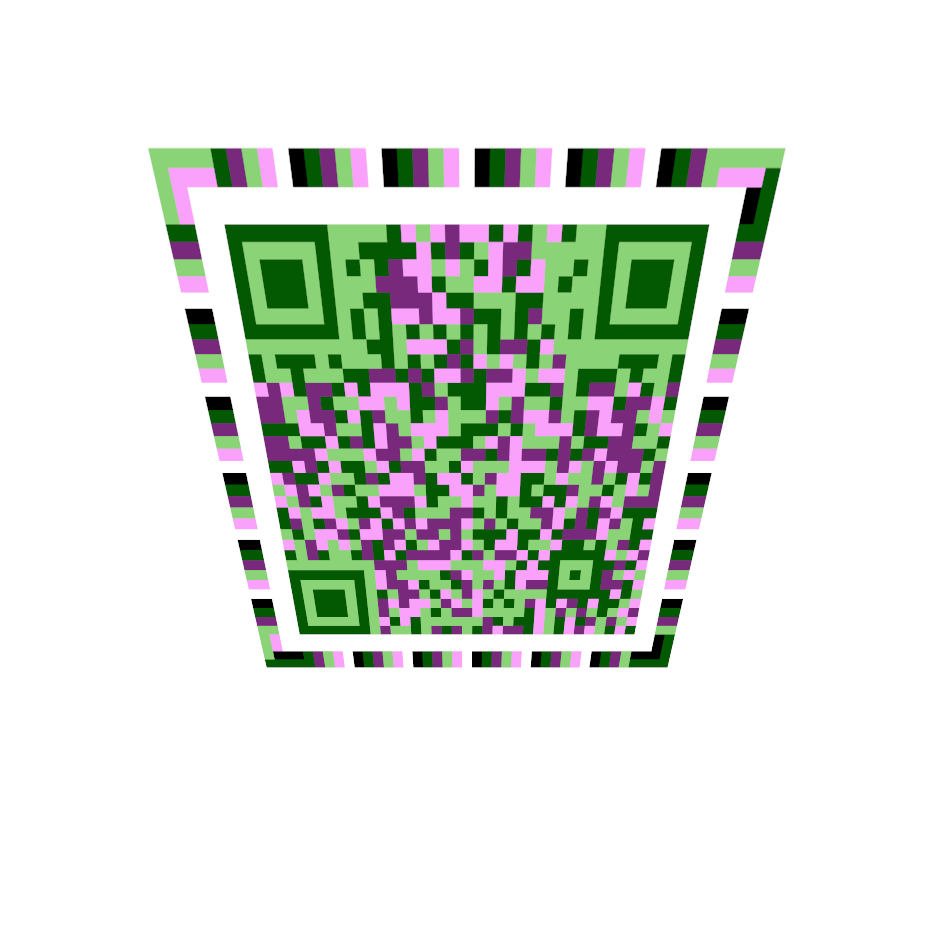
The tilt figures used to go up and down instead of steadily worsening: 0.10 read fine, 0.15 and 0.20 failed, 0.25 and 0.30 read fine again. That was the measuring instrument, not the format. Tilting resizes the image by a ratio very close to 1, and the harness was sampling once per pixel, so its sample grid beat against the module grid — the same effect that makes photographs of screens show rippling bands.
It now averages sixteen samples across each pixel, which is what a real sensor pixel does. The sweep became orderly, and doubling the sampling again changes nothing — which is how we know what is left over is not an artefact.
An earlier version of this page reported a real asymmetry: tilt tolerance depended on which way you leaned the symbol. The cause was visible in the picture — bullseyes at three corners and only a small alignment marker at the fourth, so leaning on the weak corner gave the scanner less to work with than leaning the other way.
Removing the finders removed the asymmetry with them. The ring has four identical dark corners, so there is no weak one left to lean on. Measured at eight directions of tilt, 45° apart, at every tilt from 0.15 to 0.85: every direction decodes at every angle. The specification's open question about extra interior markers for large symbols is still open, but this is no longer evidence for it.
Both layers carry redundancy so that damaged modules can be reconstructed. The format gives the colour layer noticeably more of it — and after measuring, that turns out to be right for a reason nobody had written down.
The written justification was that colour is the noisier channel. Section 04 shows it is not: colour measures 7.6 dB better on a clean capture. So the obvious move was to cut colour's redundancy back to match brightness, and take the capacity saved.
That was tested directly, by cutting colour's redundancy one step and re-measuring everything. Capacity rose nearly 9%, every impairment was unchanged — except defocus, where success collapsed from 81% to 3%. Putting the redundancy back restored it.
The same finding shows up a second way, by asking which layer actually gives out first. Each layer is swept separately: brightness counts as surviving while its prefix is still recoverable, colour while the whole symbol decodes. At 33×33, filled to capacity:
| Colour's redundancy | Capacity | Brightness fails at | Colour fails at |
|---|---|---|---|
| 35% parity | 213 B | blur 5.60 px | blur 4.75 px (−15%) |
| 45% parity — as shipped | 183 B | never, in range | blur 4.75 px |
| 55% parity | 153 B | never, in range | never, in range |
Read the first row: give colour less protection and it is the half that breaks, 15% sooner than brightness. Read the second: at the shipped setting, brightness never reaches a 50% failure rate anywhere in the tested range and colour still does — under blur, and only under blur. Every other impairment in the sweep leaves both layers intact at every level.
So both findings are true at once, and they resolve like this: colour's weakness is not noise, it is blur. A signal-to-noise measurement is a statement about random speckle, and it is structurally blind to neighbouring modules bleeding together. The extra redundancy is real protection — it is just protecting against a different enemy than the documentation claimed.
The redundancy table itself was left exactly as specified. What needed correcting was the sentence explaining it — because anyone tuning the format from "colour is noisier" would optimise the wrong quantity, and the measurements above show they would get an 8.6% capacity gain that quietly destroys defocus tolerance.
There are four ways to configure a symbol. They trade density against robustness — and one of them, it turns out, trades away both.
A profile fixes two things: how many colours the palette has, and how finely the colour layer is sampled. That second choice is the one that matters, and it is easy to get backwards.
Every module always carries its own brightness bit. The only variable is the chroma cell — the block of modules that share a single colour decision. Watch what happens to a 2×2 block of four modules:
| Profile | Colours | Chroma cell | Luma bits | Chroma bits | Bits / module |
|---|---|---|---|---|---|
| M | 2 | — | 4 | 0 | 1.000 |
| C1 | 4 | 1×1 | 4 | 4 | 2.000 |
| C2 | 4 | 2×2 | 4 | 1 | 1.227 |
| C3 | 8 | 1×1 | 4 | 8 | 3.000 |
C1 stores a hue for every module: four hue bits per block. C2 has the same four colours but makes all four modules share one hue symbol — one bit per block instead of four. That single change costs it 39% of its capacity, and the palette never entered into it.
C3 combines the two levers in the favourable direction: eight colours means each hue symbol is worth 2 bits rather than 1, and it keeps a symbol per module. Eight chroma bits per block, 3.00 bits per module, half again as dense as C1.
The specification originally paired C3's eight colours with a 2×2 cell, which is the unfavourable combination: doubling the palette adds one bit per cell, while quartering the number of cells divides by four. Net, it measured 1.455 bits per module — eight colours carrying less than four.
That configuration was measured against the others and changed to a 1×1 cell, which doubled its capacity from 82 to 165 bytes. The evidence is below.
One thing this table now understates: it counts only the grid. The ring carries payload of its own, outside those modules entirely, which is worth a further 15–18% at the smallest sizes and about 2% at the largest — so a symbol's total is higher than its bits-per-module figure times its module count.
The bits-per-module column is measured from the real layout rather than assumed. Only C2 falls short of its ideal 1.25, because a 2×2 cell can straddle a fixed pattern or contain a reference module, and an odd-numbered side cannot be tiled evenly by 2×2 blocks. A 1×1 cell has none of those problems, which is why C1 and C3 land exactly on 2.00 and 3.00.
QR uses the identical size formula, so a 33×33 LCR symbol and a QR version 4 are the same grid. Capacity at the default error-correction setting, with QR's four levels for reference. The LCR figures are for a symbol carrying the ring, which is what a screen symbol is — the ring both replaces the finders and carries payload of its own:
| 33×33 symbol | Parity | Capacity | vs QR-L | vs QR-M |
|---|---|---|---|---|
| QR — level L | 20% | 78 B | 1.00× | — |
| QR — level M | 36% | 62 B | — | 1.00× |
| QR — level Q | 52% | 46 B | — | — |
| QR — level H | 64% | 34 B | — | — |
| LCR — M (mono) | 25% | 66 B | 0.85× | 1.06× |
| LCR — C1 | 25% | 183 B | 2.35× | 2.95× |
| LCR — C2 | 25% | 121 B | 1.55× | 1.95× |
| LCR — C3 | 25% | 263 B | 3.37× | 4.24× |
Those rows are not a fair fight, because QR's levels and LCR's are defined differently — QR quotes how much damage it can repair, LCR quotes the code rate directly. Pairing them instead by how much of the symbol is parity, which is the honest comparison. LCR protects its two layers unequally, so the column heading is the luma figure; colour always carries 20 points more parity than brightness does:
| Profile | LCR @ 15% luma parity | vs QR-L (20%, 78 B) | LCR @ 35% luma parity | vs QR-M (36%, 62 B) |
|---|---|---|---|---|
| M (mono) | 76 B | 0.97× | 57 B | 0.92× |
| C1 | 213 B | 2.73× | 153 B | 2.47× |
| C2 | 139 B | 1.78× | 103 B | 1.66× |
| C3 | 307 B | 3.94× | 221 B | 3.56× |
C1 now carries about 2.5× what QR does at matched parity, and C3 between 3.5× and 4×. The format set out to achieve 1.5×–2×; removing the finders and putting the ring to work took it past that. The monochrome profile is the useful control: it is unchanged, and still slightly behind QR, which says the entire gain comes from the colour layer and the reclaimed area rather than from anything QR is doing badly.
One caveat on the mono row, and it is the reason it did not move: profile M keeps the finders. Its settings would have to ride on the ring's colours to lose them, and a monochrome symbol has no colours to ride on.
Capacity tables are abstract. This is the same payload, encoded twice, drawn at the same module size and shown at true relative scale — the widths below are in the same proportion as the symbols themselves:
qrcodegen crate, and the test suite reads it back with rqrr, an independent decoder, so the thing being compared against is a real QR symbol rather than a drawing of one. QR level M is the fair pairing here — it is the level a short fallback URL would normally use, and its parity share (36%) is closest to what LCR is carrying.Aztec Code solves the same problem differently again: a bullseye in the middle rather than finders at the corners, and no quiet zone requirement at all.
Same 2×2 structure as before — brightness down the rows, hue across the columns — but now four hues instead of two. Every one of these is a colour a single module can be:
The hue angles are deliberately uneven — 71°, 146.5°, 280°, 355.5°. Four hues spaced at a tidy 90° cannot be made vivid enough in a screen's colour range to clear the format's own minimum, so the spacing is stretched toward the directions where more saturated colour is available. Tidiness loses to reachability.
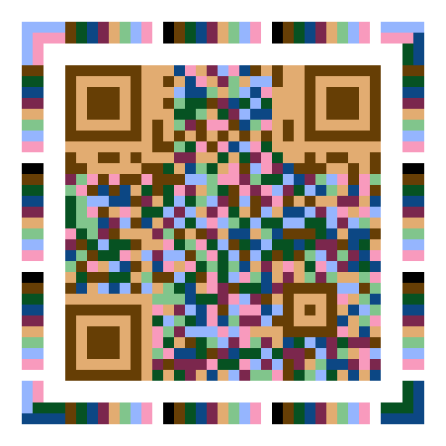
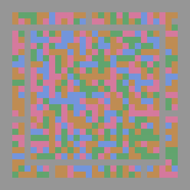
Four hue states have to share the same colour circle, so they end up 75° apart instead of 170°, and less vivid with it. That is a materially harder decision for a scanner to make:
| Profile | Hue states | Separation | Distance apart | Vividness | Colour SNR |
|---|---|---|---|---|---|
| C1 / C2 | 2 | 169.8° | 110.0 | C* 55 | 22.8 dB |
| C3 | 4 | 75.2° | 48.7 | C* 40 | 15.7 dB |
Crowding four hues into the circle costs 7.1 dB of separation. So the question is not whether C3 is less robust — it plainly is — but whether it is less robust in a way that matters, and by how much. That is a measurement, not an argument.
One symbol size, each profile loaded to its own capacity, sixteen attempts per point. The figure is the damage level at which success falls through 50% — higher is better, and the units differ per row, so compare across a row and never down a column.
| Impairment | C1 — 183 B | C2 — 121 B | C3 — 263 B |
|---|---|---|---|
| Noise | never fails | never fails | never fails |
| Blur | 4.750 | 5.864 | 4.733 |
| Glare strength | never fails | never fails | never fails |
| Glare size | 0.370 | 0.368 | 0.343 |
| Occlusion | never fails | never fails | never fails |
| Shading | never fails | never fails | 0.770 |
Four of the six impairments no longer separate the profiles at all — every profile survives the full tested range of noise, glare strength, occlusion and (for C1 and C2) shading. That is itself the result: at this symbol size the reclaimed area went into enough redundancy that these impairments stop being the binding constraint, and the sweep would have to be extended to find the knee.
Where they still separate, the ordering is narrow. C2 keeps its blur advantage, by about a pixel. C3 gives up a little glare-size tolerance (0.343 against C1's 0.370, roughly 7%) and is the only profile to hit a shading limit inside the range — and for that it carries 44% more data in the same square. Its 7.1 dB of lost hue separation costs far less than it sounds, because the error correction absorbs most of it.
No profile is best at everything, which is what makes the choice a real one rather than a default. C2 buys blur tolerance with density. C1 balances. C3 buys density with a thinner margin against glare and shading.
The original C3 — eight colours at a 2×2 cell — was measured first, and it was the most blur-tolerant profile in the set, never dropping below 50% anywhere in the sweep. But that was the only column it won, C2 covers nearly the same ground, and it paid with the worst noise and glare figures for a capacity barely above C2's.
Moving it to a 1×1 cell doubled its capacity from 82 to 165 bytes — figures from the finder-bearing layout of the time, which is why they are smaller than the table above. Noise tolerance came out identical, glare slightly better, and only blur regressed — to 4.94, still marginally ahead of C1. Twice the data, for a change that was free on three impairments out of four.
C3 is optional in the specification: implementations must support M, C1 and C2, and may reject C3 entirely. It is also never selected automatically — a caller has to name it, and the trade above is documented where that choice is made. Reach for it when capture conditions are genuinely good and the payload will not otherwise fit. Reach for C1 the rest of the time.
Every symbol on this page was produced by the LCR Code encoder and damaged by the project's own degradation harness, at 12 device pixels per module with the §6.4 ring enabled — the same configuration the quoted success rates were measured on. Percentages are over 32 independent attempts per point, each with a different payload and a randomised placement of the damage, which carries a margin of roughly ±9 points. Colour values are CIELAB: L* is lightness, a*b* the two colour axes, and hue angles are measured in that plane.
LCR capacities and bits-per-module are computed from the real layout rather than estimated, for a symbol carrying the §6.4 ring — which is what a screen symbol is, and which since the finder-less change is a different layout from a print symbol's. QR capacities are now measured the same way, by encoding with qrcodegen and reading back the version it chose, rather than transcribed from ISO/IEC 18004; QR parity percentages are still the published figures. The one picture here not produced by this project is the Aztec symbol, which is a supplied stock example carrying different data.